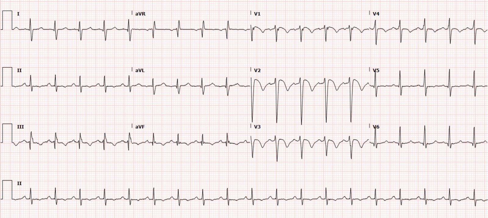
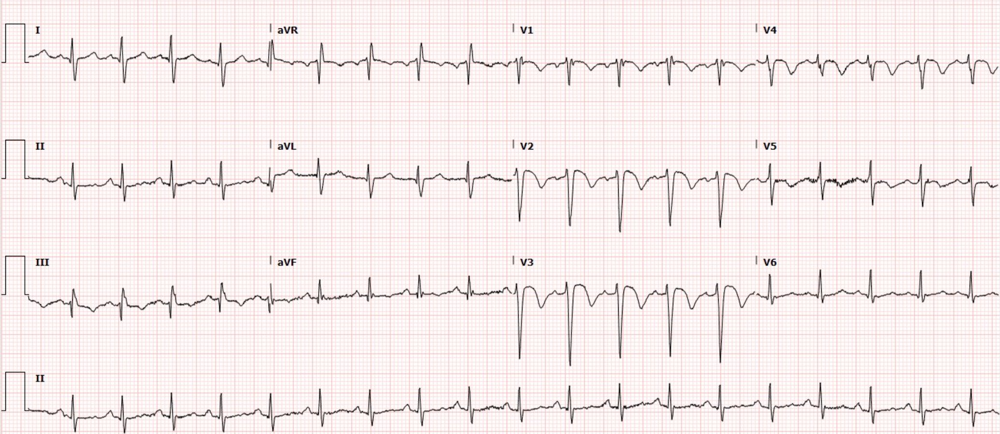
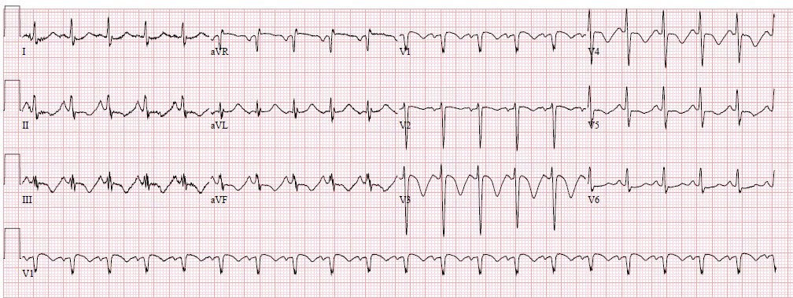
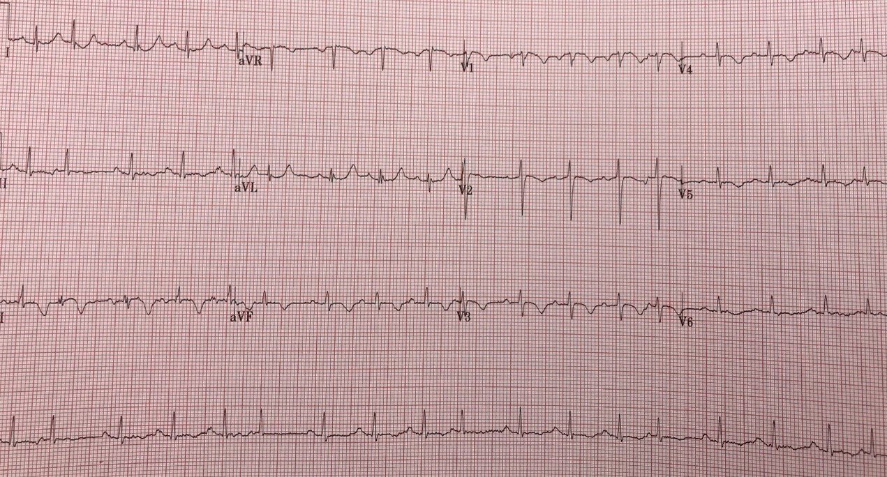
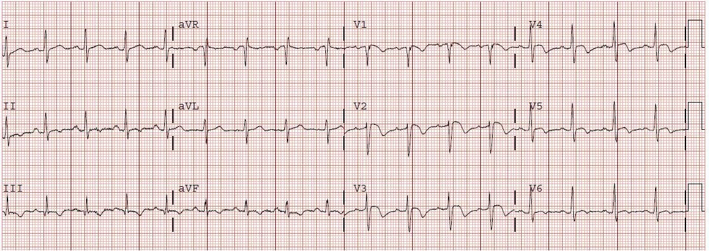
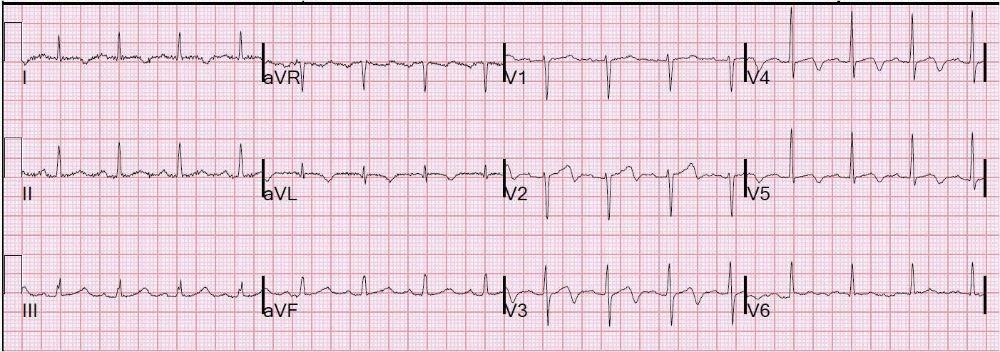
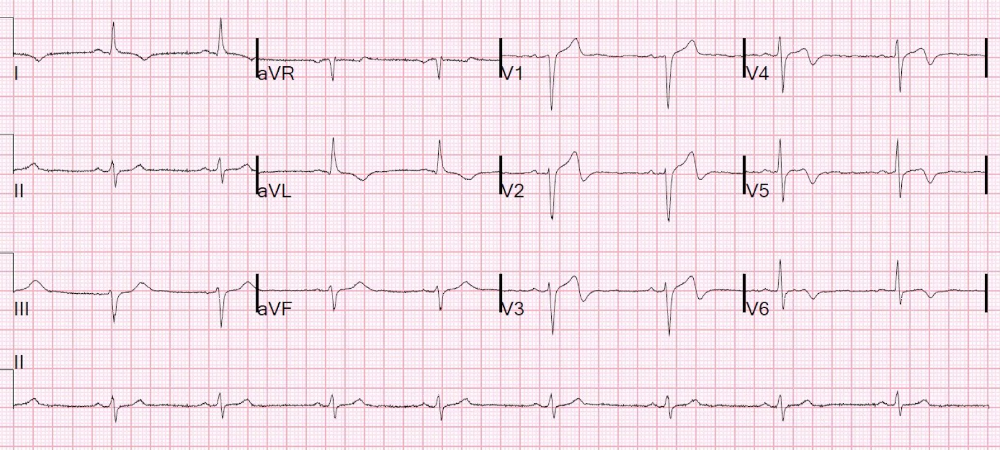
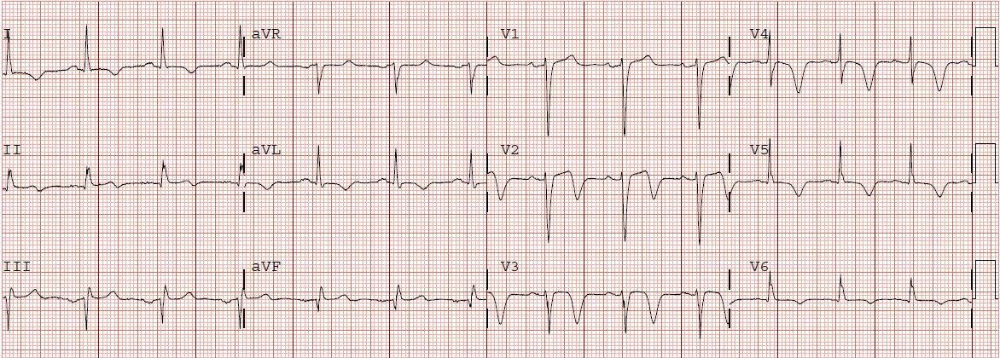
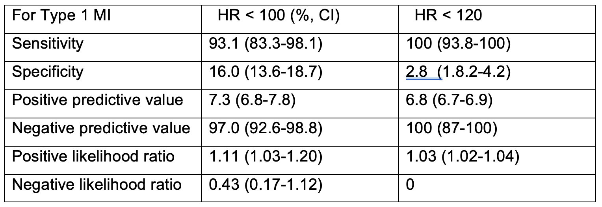
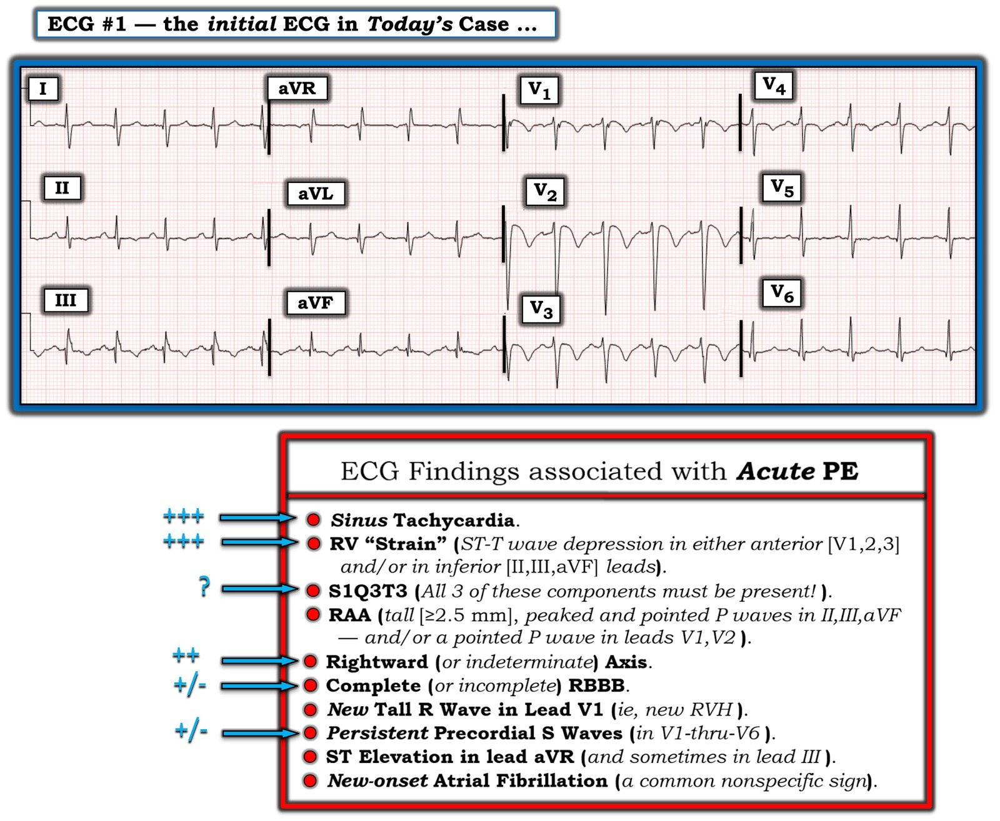

28/04/2022 — Người đàn ông 40 mấy tuổi đau bụng hạ sườn phải
Bản dịch tiếng Việt của bài "A man in his 40s with RUQ abdominal pain" – Dr. Smith’s ECG Blog. Giữ nguyên toàn bộ 12 hình ảnh và 1 video của bản gốc.
Ca bệnh do Lucas Goss MD gửi và viết, Meyers và Smith biên tập
Một người đàn ông 40 mấy tuổi, tiền sử bệnh chỉ có hút thuốc lá, đến viện vì đau bụng hạ sườn phải (RUQ) kiểu đau nhói, nặng hơn khi gắng sức, kèm buồn nôn và vã mồ hôi. Khi bệnh nhân đến, người khám ghi nhận bệnh nhân trông có vẻ bệnh nặng. Các dấu hiệu sinh tồn được trình bày dưới đây; khám thấy các chi lạnh và ấn đau vùng hạ sườn phải.
Tần số tim 108
Nhịp thở 24
Huyết áp 106/85
Độ bão hòa oxy SpO2 88%
Điện tâm đồ ban đầu:


Diễn giải của tôi:
Nhịp nhanh xoang
QRS bình thường
Không có tăng kali máu (HyperK)
QT bình thường
Dấu hiệu S1Q3T3
Ở V1-V4 (tuy nhiên rõ nhất ở V2 và V3) có sóng R nhỏ theo sau là sóng S lớn, kèm ST chênh lên dạng lồi hướng lên, tiếp theo là sóng T đảo ngược sâu và đối xứng. Ngoài ra còn có sóng T đảo ngược đối xứng ở các chuyển đạo thành dưới. Những dấu hiệu này, cùng với nhịp nhanh, giảm oxy máu, đau hạ sườn phải và khó thở, khá đặc hiệu cho tăng gánh tim phải cấp, mà nguyên nhân hay gặp nhất là thuyên tắc phổi (PE) cấp.
=================================================
Bình luận của Smith: Điện tâm đồ này gần như đặc hiệu chẩn đoán (pathognomonic) cho thuyên tắc phổi. Tần số tim là 116: cách dễ nhất để nhận ra điện tâm đồ này “có lẽ không phải hội chứng vành cấp (ACS)” chính là nhịp nhanh. BẤT CỨ khi nào thấy nhịp nhanh, tôi đều nghi ngờ ACS là nguyên nhân của các bất thường ST-T (xem bản tóm tắt chúng tôi viết ở cuối bài). Điều này dễ nhận ra. Đây là một quy tắc dễ áp dụng ngay cả với người mới học điện tâm đồ, không giống như hình dạng sóng T, v.v.
Cả 1. thiếu oxy lẫn 2. nhịp nhanh đều không xảy ra trong ACS TRỪ KHI có 1. phù phổi do sốc tim hoặc 2. thể tích nhát bóp thấp do sốc tim. Hội chứng Wellens KHÔNG gây sốc tim vì động mạch đã thông. Dĩ nhiên siêu âm tim tại giường có thể cho bạn biết ngay về thể tích nhát bóp. Do đó, sóng T Wellens không đi kèm nhịp nhanh hay thiếu oxy TRỪ KHI có một bệnh lý thứ 2 xảy ra đồng thời.
Xem bản tóm tắt của chúng tôi về nhịp nhanh trong ACS ở cuối bài.
=================================================
Troponin I độ nhạy cao ban đầu của bệnh nhân là 754 ng/L (giới hạn trên tham chiếu (URL) ở nam là 20 ng/L). Người điều trị bệnh nhân này lại lo ngại hội chứng Wellens (tái tưới máu LAD) và đã mời khoa Tim mạch hội chẩn. Các xét nghiệm khác có kết quả, cho thấy AST và ALT tăng nhẹ cùng với BNP tăng. Khi khoa tim mạch thăm khám, bệnh nhân ấn đau nhiều vùng hạ sườn phải và họ lo ngại có một quá trình bệnh lý trong ổ bụng bằng cách nào đó góp phần làm tăng troponin (như thể do “thiếu máu cục bộ do tăng nhu cầu”). Do đau bụng nhiều, bệnh nhân được chụp CT bụng và chậu. Trong lúc đó, troponin lặp lại có kết quả 671 ng/L.
Điện tâm đồ ghi lại:


Như bạn thấy, điện tâm đồ của bệnh nhân về cơ bản không thay đổi.
Tại sao điện tâm đồ và bệnh cảnh lâm sàng không gợi ý sóng T tái tưới máu ở các chuyển đạo thành trước (hội chứng Wellens)?
- Khi có sóng T đảo ngược ở các chuyển đạo trước tim, thì sóng T đảo ngược ở chuyển đạo III có khả năng do PE cao hơn nhiều so với ACS.
- Các triệu chứng của bệnh nhân không hết vào thời điểm ghi điện tâm đồ, trái lại còn tiếp tục nặng hơn. Trong Wellens (tái tưới máu LAD), bạn sẽ chờ đợi các triệu chứng của bệnh nhân phần lớn đã hết hoặc ít nhất đã cải thiện đáng kể.
- Ngoài ra bệnh nhân còn thiếu oxy nhẹ với phổi trong. Điều này không điển hình lắm cho một nhồi máu cơ tim thành trước diện rộng gây sốc tim, khi đó bạn sẽ chờ đợi có phù phổi. Trái lại, bệnh nhân này có X-quang ngực với phổi trong, triệu chứng sung huyết gan/suy thất phải (đau hạ sườn phải, men gan tăng), và nhịp nhanh (thường không có trong OMI trừ khi có sốc tim) — tất cả đều hướng tới suy thất phải cấp.
Kosuge và cs. đã chứng minh rằng, khi sóng T đảo ngược ở các chuyển đạo trước tim, nếu chúng cũng đảo ngược ở chuyển đạo III và V1, thì thuyên tắc phổi có khả năng cao hơn nhiều so với ACS. Trong nghiên cứu này, (trích dẫn) “sóng T âm ở chuyển đạo III và V1 chỉ được quan sát thấy ở 1% bệnh nhân ACS so với 88% bệnh nhân thuyên tắc phổi cấp (APE) (p nhỏ hơn 0.001). Độ nhạy, độ đặc hiệu, giá trị tiên đoán dương và giá trị tiên đoán âm của dấu hiệu này trong chẩn đoán PE lần lượt là 88%, 99%, 97% và 95%. Tóm lại, sự hiện diện của sóng T âm ở cả hai chuyển đạo III và V1 cho phép phân biệt PE với ACS một cách đơn giản nhưng chính xác ở những bệnh nhân có sóng T âm ở các chuyển đạo trước tim.”
Quay lại ca bệnh của chúng ta:
Kết quả CT bụng và chậu của bệnh nhân không cho thấy quá trình bệnh lý cấp tính nào trong ổ bụng, tuy nhiên may mắn là đã phát hiện thuyên tắc phổi lan rộng hai bên.
Sau đó bệnh nhân được chụp CT mạch máu (CTA) ngực.
https://vimeo.com/590400982 (video trên Vimeo)
6E648B51-D6CE-4383-BCCE-78DCAEE84363.mov của Lucas Robert trên Vimeo.
Kết quả đọc CT: Thuyên tắc phổi hai bên diện lớn, tỷ lệ RV/LV tăng
Bệnh nhân cũng được làm siêu âm tim chính thức, cho thấy thất phải giãn nặng với giảm động thành tự do và chức năng vùng mỏm được bảo tồn (dấu hiệu McConnell), phù hợp với tăng gánh tim phải cấp. Bệnh nhân cũng được phát hiện có còn lỗ bầu dục (PFO) với luồng thông phải-trái.
May mắn là bệnh nhân vẫn ổn định huyết động và được xác định có PE dưới diện rộng (submassive) mức độ nặng. Bệnh nhân được bắt đầu dùng heparin và nhập đơn vị hồi sức tích cực (ICU). Cuối cùng, bệnh nhân không bao giờ cần đến tiêu sợi huyết hay các liệu pháp nâng cao khác. Bệnh nhân được siêu âm chi dưới, cho thấy huyết khối tĩnh mạch sâu (DVT) hai bên với một số phần là huyết khối mạn tính. Ngoài ra, diễn biến nằm viện của bệnh nhân không có gì đặc biệt và bệnh nhân được xuất viện về nhà.
Như bạn thấy, điều cốt yếu là phải áp dụng các dấu hiệu điện tâm đồ này vào đúng bối cảnh lâm sàng và dùng siêu âm tim tại giường để hỗ trợ chẩn đoán.
Đôi khi có thể khó phân biệt giữa sóng T tái tưới máu thành trước, sóng T tái tưới máu thành trước và thành dưới trong trường hợp LAD "vòng qua mỏm" (wraparound), và tăng gánh tim phải cấp như trong ca này. Tuy nhiên, dựa vào bệnh cảnh lâm sàng, bệnh sử triệu chứng và siêu âm tim tại giường có thể giúp phân biệt hai tình trạng này. Ngoài ra, hãy nhớ rằng sóng T đảo ngược (TWI) đồng thời ở III và các chuyển đạo thành trước có khả năng là PE cao hơn ACS, như Kosuge và cs. đã chứng minh.
Quan trọng hơn, tái tưới máu thành trước và PE đơn giản là trông khác nhau trên điện tâm đồ, theo những cách mà tôi khó mô tả bằng lời, nhưng chỉ có thể ghi nhớ bằng mắt.
Dưới đây bạn có thể so sánh các ca tăng gánh tim phải cấp với các ca tái tưới máu thành trước.
Đây là một số ca PE kèm tăng gánh tim phải cấp:






So sánh điện tâm đồ của bệnh nhân chúng ta với các ví dụ tái tưới máu thành trước này:






Bạn có thể thấy rằng trong các ví dụ tái tưới máu thành trước này, sóng T phần lớn dương ở các chuyển đạo III và aVF. Ngoài ra, sóng T tái tưới máu thường lan tới các chuyển đạo bên (tùy thuộc vào vùng của mạch máu trước đó bị tắc). Điều này trái ngược với tăng gánh tim phải cấp, trong đó các dấu hiệu thường rõ nhất ở các chuyển đạo đại diện cho thất phải (V2 và V3, đôi khi tới V4).
Những điểm cần học:
Nhịp nhanh không xảy ra trong Wellens và hiếm gặp trong ACS, trừ khi ACS nặng tới mức gây sốc tim, hoặc trừ khi có một bệnh lý khác xảy ra đồng thời.
Thiếu oxy không xảy ra trong Wellens và hiếm gặp trong ACS, trừ khi ACS nặng tới mức gây sốc tim kèm phù phổi (đường B trên siêu âm), hoặc trừ khi có một bệnh lý khác xảy ra đồng thời.
Tất cả những gì bạn cần làm là ghi nhớ hình dạng của những đường nguệch ngoạc này và bạn có thể chẩn đoán ngay lập tức một số ca PE quan trọng nhất. Bạn có thể tránh được việc chậm chẩn đoán nhiều giờ, tránh được sự nhầm lẫn khi nghĩ rằng đây có thể là Wellens, v.v. Đôi khi điện tâm đồ đặc hiệu hơn thăm khám thực thể, đôi khi thì không. Nếu bạn có thể nhận ra khi nào điện tâm đồ là chìa khóa để hiểu ca bệnh, bệnh nhân sẽ được hưởng lợi.
Mặc dù điện tâm đồ không nhạy với mọi PE (đặc biệt là những ca không có tăng gánh tim phải), các dấu hiệu sóng T đảo ngược đối xứng (rõ nhất ở V2 và V3) kèm sóng T đảo ngược ở chuyển đạo III và aVF, với hình dạng như trình bày ở trên, có thể đặc hiệu cho tăng gánh tim phải cấp.
Hãy áp dụng điện tâm đồ vào bối cảnh lâm sàng của bệnh nhân và dùng siêu âm tại giường nếu bạn không thể phân biệt hình ảnh này với Wellens. Hình ảnh siêu âm cũng rất khác nhau giữa hai bệnh lý này.
Các dấu hiệu điện tâm đồ của Wellens khác với các dấu hiệu của tăng gánh tim phải cấp. Trong Wellens, thường không có sóng T đảo ngược ở các chuyển đạo III và aVF và các dấu hiệu thường lan tới các chuyển đạo bên. Một lần nữa, điều này trái ngược với tăng gánh tim phải cấp, trong đó các dấu hiệu thường rõ nhất ở chuyển đạo V2 và V3.
Xem thêm:
A woman in her 50s with shortness of breath (Một phụ nữ 50 mấy tuổi bị khó thở)
When the ECG is more revealing than the HPI (Khi điện tâm đồ tiết lộ nhiều hơn bệnh sử)
A crashing patient with an abnormal ECG that you must recognize (Một bệnh nhân đang suy sụp nhanh với điện tâm đồ bất thường mà bạn phải nhận ra)
A man in his 40s with a highly specific ECG (Một người đàn ông 40 mấy tuổi với điện tâm đồ có độ đặc hiệu cao)
Chest pain, ST Elevation, and tachycardia in a 40-something woman (Đau ngực, ST chênh lên và nhịp nhanh ở một phụ nữ 40 mấy tuổi)
Repost: Syncope, Shock, AV block, RBBB, Large RV, “Anterior” ST Elevation in V1-V3 (Đăng lại: Ngất, sốc, blốc AV, RBBB, thất phải lớn, ST chênh lên “thành trước” ở V1-V3)
A young woman with altered mental status and hypotension (Một phụ nữ trẻ bị rối loạn ý thức và hạ huyết áp)
An elderly woman transferred to you for chest pain, shortness of breath, and positive troponin – does she need the cath lab now? (Một phụ nữ cao tuổi được chuyển đến bạn vì đau ngực, khó thở và troponin dương tính – bà ấy có cần vào phòng thông tim ngay không?)
A 30-something woman with chest pain and h/o pulmonary hypertension due to chronic pulmonary emboli (Một phụ nữ 30 mấy tuổi bị đau ngực, tiền sử tăng áp phổi do thuyên tắc phổi mạn tính)
A 30-something with 8 hours of chest pain and an elevated troponin (Một người 30 mấy tuổi đau ngực 8 giờ và troponin tăng)
Syncope, Shock, AV block, Large RV, “Anterior” ST Elevation…. (Ngất, sốc, blốc AV, thất phải lớn, ST chênh lên “thành trước”….)
Dyspnea, Chest pain, Tachypneic, Ill appearing: Bedside Cardiac Echo gives the Diagnosis (Khó thở, đau ngực, thở nhanh, trông có vẻ bệnh nặng: Siêu âm tim tại giường cho chẩn đoán)
31 Year Old Male with RUQ Pain and a History of Pericarditis. Submitted by a Med Student, with Great Commentary on Bias! (Nam 31 tuổi đau hạ sườn phải, tiền sử viêm màng ngoài tim. Do một sinh viên y khoa gửi, kèm bình luận rất hay về thiên kiến!)
Chest pain, SOB, Precordial T-wave inversions, and positive troponin. What is the Diagnosis? (Đau ngực, khó thở, sóng T đảo ngược ở các chuyển đạo trước tim và troponin dương tính. Chẩn đoán là gì?)
Cardiac Ultrasound may be a surprisingly easy way to help make the diagnosis (Siêu âm tim có thể là một cách dễ dàng đến bất ngờ để giúp chẩn đoán)
Answer: pulmonary embolism. Now another, with ultrasound…. (Trả lời: thuyên tắc phổi. Giờ là một ca khác, kèm siêu âm….)
This is a quiz. The ECG is nearly pathognomonic. Answer at bottom. (Đây là một câu đố. Điện tâm đồ gần như đặc hiệu chẩn đoán. Đáp án ở cuối bài.)
Chest Pain, SOB, anterior T-wave inversion, positive troponin (Đau ngực, khó thở, sóng T đảo ngược ở thành trước, troponin dương tính)
Anterior T wave inversion due to Pulmonary Embolism (Sóng T đảo ngược ở thành trước do thuyên tắc phổi)
Ngã gục, còn mạch, điện tâm đồ cho thấy OMI thành dưới. Sau đó mất mạch trong khi monitor vẫn tiếp tục ghi phức bộ hẹp (“ngừng tim kiểu hoạt động điện vô mạch” – “PEA arrest”)
TIÊU ĐỀ:
Giá trị tiên đoán âm của nhịp nhanh đối với nhồi máu cơ tim típ I ở bệnh nhân đau ngực có huyết động ổn định.
Lee DH.
Sandoval Y. Apple FS. Ives S.
Smith SW. The Negative Predictive Value of Tachycardia
for Type I MI in Hemodynamically Stable Patients with Chest Pain. Tạp chí Academic
Emergency Medicine. 25 (S1): S253.
TÓM TẮT:
Đặt vấn đề:
Những bệnh nhân nhồi máu cơ tim típ 1 có chức năng thất trái bình thường và huyết động ổn định thường không biểu hiện nhịp nhanh xoang. Mục tiêu của phân tích này là khảo sát xem sự hiện diện của nhịp nhanh có giúp nhận diện những bệnh nhân ít có khả năng bị nhồi máu cơ tim típ 1 hay không.
Phương pháp:
Đây là một phân tích thứ cấp hậu kiểm (post-hoc) trên dữ liệu của một nghiên cứu quan sát tiến cứu gồm 1927 bệnh nhân liên tiếp tại khoa cấp cứu (ED) trong 4 tháng, có ít nhất 1 kết quả troponin I thế hệ hiện hành (cTnI).
Tiêu chuẩn chọn vào gồm đau ngực, ít nhất 2 lần đo cTnI liên tiếp trong 24 giờ, nhịp xoang, và ít nhất 1 điện tâm đồ.
Tiêu chuẩn loại trừ gồm tuổi dưới 18, huyết áp tâm thu (SBP) dưới 100 mmHg, siêu âm tim có phân suất tống máu (EF) dưới 50%, STEMI, có thai và chấn thương.
Mọi ca có ít nhất một giá trị cTnI tăng đều được hai bác sĩ lâm sàng thẩm định, sau khi xem xét toàn bộ hồ sơ bệnh án, để xếp vào một típ nhồi máu cơ tim cụ thể (hoặc không nhồi máu cơ tim). Bệnh nhân được phân tầng theo có hay không có nhồi máu cơ tim típ I, và theo tần số tim (HR) dưới 99 lần/phút và dưới 120 lần/phút trên điện tâm đồ lúc đến viện. Tất cả điện tâm đồ được một chuyên gia lâm sàng mã hóa là có ST chênh lên, ST chênh xuống, sóng T đảo ngược [bất thường ST/T, (ST/T-A)], hoặc không có bất thường nào kể trên.
Kết quả:
877 bệnh nhân được đưa vào nghiên cứu, trong đó 135 người có HR lớn hơn 99 lần/phút (742 người nhỏ hơn hoặc bằng 99 lần/phút) và 23 người có HR lớn hơn 120 lần/phút (854 người nhỏ hơn hoặc bằng 120 lần/phút). Trong 877 người, 58 (6.6%) bị nhồi máu cơ tim típ I và 819 người không bị; 4 trên 58 (6.9%) người có nhồi máu cơ tim típ I, và 131 trên 819 (16.0%) người không có, có HR lớn hơn 99 (P=0.02). Giá trị tiên đoán âm (NPV) của HR dưới 99 đối với nhồi máu cơ tim típ I là 97.04% (KTC 95% 92.6-98.8) và tỷ số khả dĩ âm [(-)LR] là 0.43 (KTC 95% 0.17-1.12). 23 người có HR lớn hơn 120 lần/phút (854 người ≤ 120 lần/phút); 0/23 người có HR lớn hơn 120 lần/phút bị nhồi máu cơ tim típ 1. NPV của HR dưới 100 lần/phút đối với nhồi máu cơ tim típ I ở nhóm có ST/T-A cũng bằng nhóm không có, là 92.0% (KTC 95% 74.7.6-97.8). Trong 23 bệnh nhân có HR lớn hơn 120 lần/phút, 4 người có ST/T-A. Xem Bảng về giá trị chẩn đoán.


Kết luận:
Ở bệnh nhân đau ngực có huyết động ổn định, nhịp nhanh xoang giúp nhận diện những bệnh nhân ít có khả năng bị nhồi máu cơ tim típ I, đặc biệt ở những người có HR lớn hơn 120 lần/phút.

===================================
BÌNH LUẬN CỦA TÔI, bởi KEN GRAUER, MD (28/4/2020):
===================================
Ca bệnh sâu sắc do Drs. Goss và Meyers trình bày, làm nổi bật tầm quan trọng của việc nhận ra các dấu hiệu điện tâm đồ của PE cấp. Tôi tập trung bình luận vào việc phân tích sâu hơn một số đặc điểm điện tâm đồ “tố cáo” (tell-tale) này.
- “Chủ đề” của ca hôm nay là “nhận diện hình ảnh” (pattern recognition). Cũng như chẩn đoán RVH (phì đại thất phải – Right Ventricular Hypertrophy) trên điện tâm đồ — việc nhận ra “hình ảnh” gợi ý PE cấp trên điện tâm đồ không dựa trên bất kỳ một dấu hiệu điện tâm đồ đơn lẻ nào.
- Thay vào đó — ở một bệnh nhân có Bệnh sử và Thăm khám có thể phù hợp với chẩn đoán — chính tập hợp các dấu hiệu điện tâm đồ, khi hiện diện, gợi ý mạnh mẽ PE cấp cho đến khi chứng minh được điều ngược lại.
Như Drs. Goss và Meyers đã nêu — hình ảnh điện tâm đồ của PE cấp là thứ chúng ta cần nhận ra trong vòng vài giây khi nhìn thấy!
- Để rõ ràng — tôi đã đặt lại điện tâm đồ ban đầu của ca hôm nay trong Hình 1. Ở cuối Hình này, tôi đã thêm Bảng mà tôi từng trình bày trong Bình luận của tôi ở bài đăng ngày 28 tháng Ba năm 2022 của Dr. Smith’s ECG Blog.


Bệnh nhân hôm nay có “đọc sách giáo khoa” không?
Xin nhấn mạnh — không có dấu hiệu điện tâm đồ đơn lẻ nào cho phép chẩn đoán PE cấp. Thay vào đó, chẩn đoán có thể được gợi ý bởi sự hiện diện của ít nhất vài dấu hiệu điện tâm đồ trong Hình 1 khi chúng xuất hiện trong bối cảnh lâm sàng “phù hợp”.
- Hầu hết bệnh nhân không “đọc sách giáo khoa” trước khi gặp biến cố. Bệnh nhân hôm nay cũng không ngoại lệ — vì cần đến “bối cảnh” lâm sàng để diễn giải một số dấu hiệu điện tâm đồ mà tôi đã đánh dấu bằng mũi tên MÀU XANH.
- TRƯỚC TIÊN — Mặc dù bệnh nhân hôm nay không than khó thở cấp — người đàn ông 40 tuổi “trông có vẻ bệnh nặng” này có nhịp nhanh (108/phút) — thở nhanh (24/phút) và giảm oxy máu (SpO2 = 88%) — nên biểu hiện của anh rõ ràng là “có thể phù hợp” với PE cấp.
- Nhịp nhanh xoang: Tuy không thật sự bắt buộc để chẩn đoán, tần số tim nhanh (thường ít nhất 90/phút) là một dấu hiệu thường gặp và được dự đoán trước ở bệnh nhân PE cấp có ý nghĩa huyết động. Tần số tim trong ca hôm nay phù hợp với điều này, ở mức ~115/phút.
- Tăng gánh RV (thất phải – Right Ventricular): Nhận ra hình ảnh “tăng gánh” RV trên điện tâm đồ là một trong những chỉ điểm điện tâm đồ quan trọng nhất của PE cấp có ý nghĩa huyết động. Đáng tiếc là dấu hiệu này quá thường xuyên vẫn bị bỏ qua và bị đọc nhầm thành thiếu máu cục bộ do mạch vành. “Tăng gánh” RV biểu hiện bằng ST chênh xuống và/hoặc sóng T đảo ngược, điển hình xuất hiện ở các chuyển đạo trước (V1,V2,V3) — và/hoặc ở các chuyển đạo dưới (II,III,aVF). Trong điện tâm đồ #1 — đoạn ST dạng vòm (coving) kèm sóng T đảo ngược sâu, đối xứng ở các chuyển đạo trước hoàn toàn phù hợp với hình ảnh điện tâm đồ của “tăng gánh RV” cấp. Dù thay đổi ở các chuyển đạo dưới không rõ rệt bằng — sóng T có đảo ngược ở III và aVF, kèm một chút gợi ý đảo ngược ở cả II.
- S1Q3T3: Theo kinh nghiệm của tôi, hiếm khi (nếu có) chỉ riêng dấu hiệu S1Q3T3 đơn độc lại giúp chẩn đoán được một PE mới có ý nghĩa. Dù vậy, dấu hiệu điện tâm đồ này có thể cực kỳ hữu ích NẾU thấy đi kèm với các bằng chứng điện tâm đồ khác của PE cấp. LƯU Ý: Về mặt kỹ thuật — dấu hiệu S1Q3T3 không có mặt trong điện tâm đồ #1 — vì có một sóng lệch dương ban đầu nhỏ-nhưng-có-thật (sóng r) ở chuyển đạo III. Ý nghĩa lâm sàng của dấu hiệu S1Q3T3 chỉ được kiểm chứng khi có đủ cả 3 thành phần ( = sóng S ở chuyển đạo I — sóng Q ở chuyển đạo III — và sóng T đảo ngược ở chuyển đạo III).
- Dù vậy — mặc dù không có dấu hiệu S1Q3T3 “thực sự” — sóng S sâu-hơn-dự-kiến ở chuyển đạo I và phức bộ rSR’ mà ta thấy ở chuyển đạo III đều củng cố thêm nhận định điện tâm đồ về “tăng gánh” RV cấp. Phức bộ QRS gần như đẳng điện (nếu không nói là hơi âm) ở chuyển đạo I, cùng với các phức bộ QRS gần như đẳng điện ở hầu hết các chuyển đạo chi còn lại, dẫn đến trục mặt phẳng trán không xác định — đây là một trong những dấu hiệu liên quan đến “tăng gánh” RV cấp.
- RBBB hoàn toàn hoặc không hoàn toàn là một dấu hiệu điện tâm đồ khác liên quan đến PE cấp. Chuyển đạo III là một chuyển đạo phía bên phải (với góc nhìn điện học +120 độ trên mặt phẳng trán). Do đó — việc thấy phức bộ rSR’ ở chuyển đạo III (thay vì ở V1) đóng vai trò như một dạng thay thế của RBBB không hoàn toàn, nhất là khi có sóng S hẹp ở các chuyển đạo bên I và V6, cùng khía tận cùng (thay vì phức bộ R’) ở V1.
- Các dấu hiệu điện tâm đồ trong Hình 1 không có mặt trên bản ghi hôm nay — gồm RAA (bất thường nhĩ phải), sóng R ưu thế ở V1, ST chênh lên ở aVR, và rung nhĩ.
- Dấu hiệu điện tâm đồ cuối cùng ít nhất cũng được gợi ý — là sự tồn tại kéo dài của sóng S ở các chuyển đạo trước tim tới tận chuyển đạo V6 (dù sóng s ở V6 nhỏ).
ĐIỀU CỐT LÕI về điện tâm đồ #1: Phù hợp với “chủ đề” của ca hôm nay ( = nhận diện hình ảnh) — ngay khi tôi thấy nhịp nhanh xoang và ST dạng vòm kèm sóng T đảo ngược sâu, đối xứng ở V1 đến V4 — tôi đã nghĩ: “tăng gánh RV cấp” cho đến khi chứng minh được điều ngược lại”.
- Củng cố nhận định của tôi về PE cấp là biểu hiện lâm sàng (tức là “bệnh nhân trông có vẻ bệnh nặng”, nhịp nhanh, thở nhanh, giảm oxy máu) — cộng với một số dấu hiệu điện tâm đồ bổ sung tinh tế hơn mà “trong bối cảnh này” càng ủng hộ chẩn đoán. Chúng gồm — sóng S sâu ở chuyển đạo I (kèm trục mặt phẳng trán không xác định) — gợi ý “tăng gánh” RV cũng hiện diện ở các chuyển đạo dưới — hình ảnh IRBBB thay thế ở chuyển đạo III — và sự tồn tại kéo dài của sóng S ở các chuyển đạo trước tim (dù sóng S ở V6 không quá sâu).
ĐIỂM THEN CHỐT CUỐI CÙNG (PEARL): Điện tâm đồ ít có khả năng giúp ích hơn nhiều trong chẩn đoán các PE tương đối nhỏ (tức là dưới phân thùy) không có ý nghĩa huyết động — loại thường chỉ được phát hiện trên CT ngực thực hiện ở những bệnh nhân có triệu chứng kém thuyết phục hơn. Đây có lẽ là một “điều tốt” — vì còn thiếu bằng chứng rằng điều trị các PE dưới phân thùy không có ý nghĩa huyết động được phát hiện tình cờ là có lợi (và việc đó chắc chắn không phải là không có nguy cơ gây hại). Có lẽ đây là một “phúc lợi trá hình” khi điện tâm đồ ít có khả năng hỗ trợ phát hiện các thuyên tắc phổi tương đối nhỏ hơn.
- Khi bạn đã thấy giảm oxy máu đáng kể, nhịp nhanh và dấu hiệu rõ ràng của “tăng gánh” RV cấp trên điện tâm đồ (như trong ca hôm nay) — gần như chắc chắn bạn đang đối mặt với một PE có ý nghĩa huyết động, cần được chẩn đoán và điều trị kịp thời!